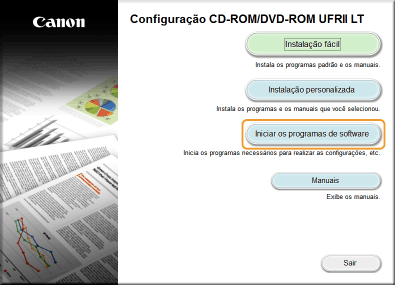
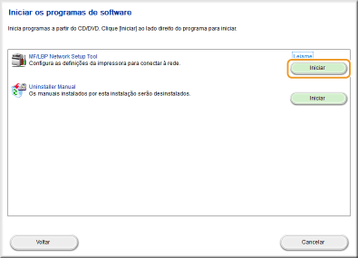
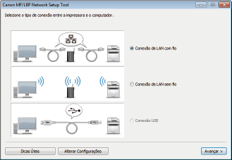
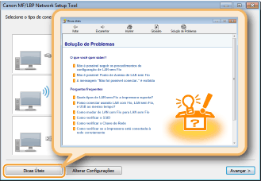

0KU8-01Y
Os roteadores sem fio (ou pontos de acesso) conectam a máquina a um computador através de ondas de rádio. Se o seu roteador sem fio for equipado com Wi-Fi Protected Setup (WPS), a configuração da sua rede é feita por meio do pressionar de um botão. Se os seus dispositivos de rede não oferecem suporte à configuração automática ou se você deseja especificar com detalhes as definições de autenticação e criptografia, será necessário configurar a conexão manualmente. Para fazer as configurações sem fio desta máquina, use a Ferramenta de Configuração de Rede MF/LBP a partir de seu computador. Certifique-se de que seu computador está conectado corretamente à rede.

|
|
|
Faça login como administrador
Para executar o seguinte procedimento, faça o login no seu computador com uma conta de administrador.
Risco de vazamento de informação
Use uma conexão LAN sem fios por sua própria conta e risco. Se a máquina estiver conectada a uma rede não segura, suas informações pessoais podem ser vazadas para terceiros, pois as ondas de rádio usadas na comunicação sem fio podem ir para qualquer lugar próximo, elas podem até atravessar paredes.
Padrões de segurança da LAN sem fio
Esta máquina suporte os seguintes padrões de segurança de LAN sem fio. Para saber mais sobre a compatibilidade de segurança sem fio de seu roteador sem fio, consulte o manual de instruções ou contate o fabricante.
WEP de 128 (104)/64 (40) bits
WPA-PSK (TKIP/AES-CCMP)
WPA2-PSK (TKIP/AES-CCMP)
|
 |
|
A impressora não vem com um roteador sem fio. Tenha o roteador à mão, conforme necessário.
O roteador sem fio precisa estar em conformidade com os padrões do IEEE 802.11b/g/n e ser capaz de se comunicar na largura de banda de 2,4 GHz. Para mais informações, consulte o manual de instruções fornecido com o roteador ou entre em contato com o fabricante.
A LAN com fio e a LAN sem fio não podem ser usadas simultaneamente. Ao usar um conexão LAN sem fio, não conecte um cabo LAN na impressora. Isso pode causar um mal funcionamento.
Se você usa a impressora no seu escritório, consulte o seu administrador de rede.
|
1
Insira o CD-ROM/DVD-ROM do User Software no drive do computador.
2
Clique em [Iniciar os programas de software].


Se a tela acima não for exibida Exibindo a tela [Configuração do CD-ROM/DVD-ROM]
Se [Reprodução Automática] for exibido, clique [Executar MInst.exe].
3
Clique em [Iniciar] para o [MF/LBP Network Setup Tool].

4
Siga as instruções na tela para configurar as definições de LAN sem fio.

Se não entender algo
Clique em [Dicas Úteis] na parte inferior esquerda da tela para exibir das dicas de solução de problemas.

|
|
|
Após trocar o método de conexão de LAN com fio para LAN sem fio
Você deve desinstalar o driver de impressora instalado atualmente e reinstalá-lo (Guia de instalação do driver de impressora).
|